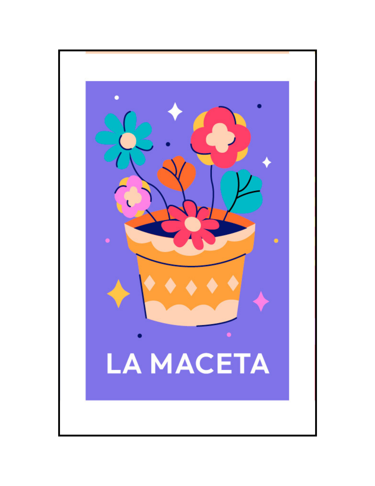

|

LA MACETA
|
'Naranjo en maceta, ¡qué triste es tu suerte!'
Bring a pot with its flower. I'm going to that flowery garden to choose the best one. In school I have learned that must be cultivated with love, The lesson today I have fulfilled My little pot is a delight. In your place I do not forget, water is their obligatory food, But my words are the incentive that causes her blush And it has given me the color of the most beautiful flower.the good perfume of peppermint, and of good basil, that my mother had in her pots. That you saw me sink my pure hands In the still water, to reach the enchanted fruits that today at the bottom of the fountain they dream... Yes, I know you, happy and clear afternoon, almost spring.